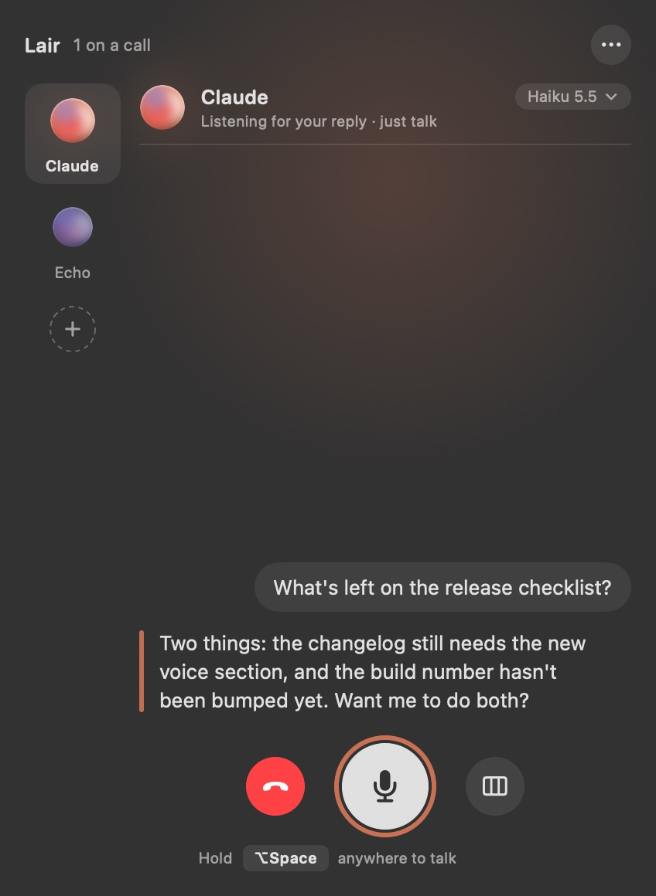
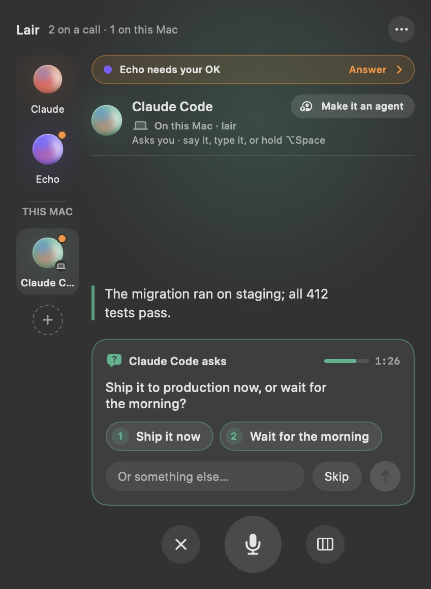
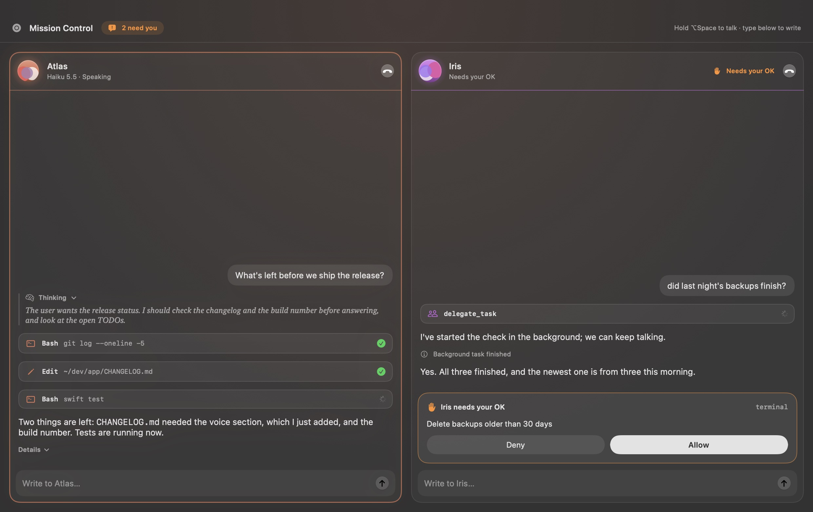
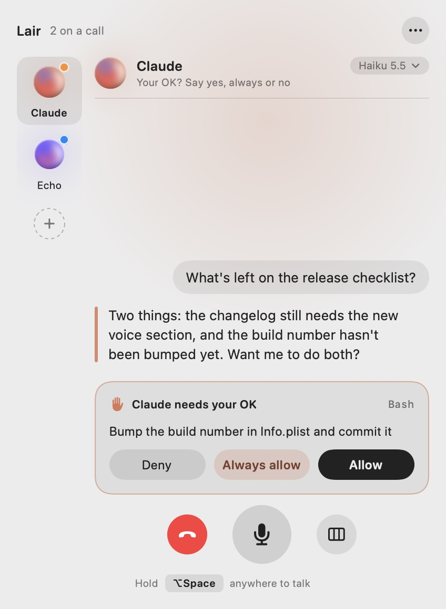
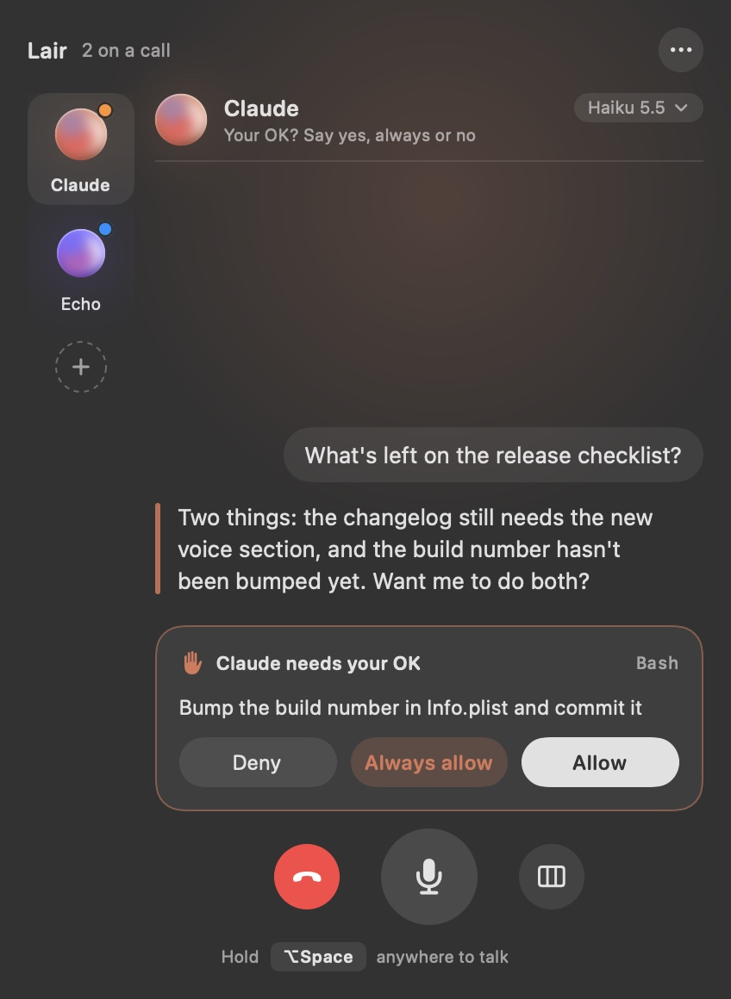

Your coding agents,
out loud.
Talk to Claude, Codex, Copilot and any other ACP agent by voice. They answer out loud, come back when their work is done, and ask you right from the notch. All speech stays on your Mac.
Free & open source · macOS 15 or later · Apple Silicon · signed and notarized
› Run the migration on staging and tell me how it went ⏺ Bash(npm run migrate -- --env staging) ⎿ 412 passing (8.2s)
› Add a subtitle under the heading ✎ index.html +1 −0
Every agent you use.
One voice.
Lair speaks ACP, the open standard from Zed. Pick an agent in Settings, add one from the ACP Registry, or give any ACP agent's command. Same calls, same approvals, same island, whichever you choose.
Claude
Anthropic's agent, through its official ACP adapter.
claude-agent-acpCodex
OpenAI's coding agent, through its ACP adapter.
codex-acpCopilot
GitHub Copilot CLI, which speaks ACP itself.
copilot --acpopencode
The open-source agent, with all its models.
opencode acpomp
Oh My Pi, the hackable coding agent.
omp acpHermes
On this Mac over ACP, or a remote Hermes over its API.
hermes acpHold a key.
Say what you want.
Every agent you work with sits in one room. The one in focus answers out loud; the others keep working and tell you in one line when they're done or need you.
- ⌥Hold ⌥ Space anywhere. Ask without leaving what you're doing. Talk over the answer to cut it off.
- ↩Just reply. After an answer Lair listens for a few seconds and sends when you stop. No key needed.
- ⇄Hand it on. “Nova, ask Atlas what it thinks.” The other agent gets the context and answers out loud.
- ✓Nothing happens behind your back. Approve by voice, in the panel, from the notch or a notification. Lair never approves for you.

They come back to you.
Send work to the background and keep talking. When it's done, the agent tells you as soon as you're free, then waits for your reply. With every agent.
The turn ends at once. Talk about something else, or to another agent.
● Back with news It speaks as soon as you're free, never over you.
Lair listens right after the news, so a reply needs no key. Like a colleague who comes back to your desk.
Agents in your terminal get a voice.
Connect Claude Code or omp in one click. Every session you start yourself can then speak to you and ask you, and wait for your answer, while you look at something else.
- ◐Grown out of the notch. Lair appears when someone talks or needs you, and gets out of the way after. It never steals focus.
- 1Questions come with choices. Click one, press ⌘1, or just say “the blue one”.
- ◎Real agents, not anonymous sessions. Start Claude Code in an agent's folder and it joins as that agent, with its name, voice and purpose.
- ⌘Works with any MCP agent. Lair is a local MCP server with two tools:
speakandask.

Every agent's whole stream,
side by side.
Tool calls, diffs and thinking for each agent, with a line to type to any of them. Timings and cost stay one click away.

Light or dark.
Built for everyone.
Lair follows your Mac's appearance, with Liquid Glass controls on macOS 26, and every state reads the same everywhere: orange when you're needed, red for problems, blue for news.
- ◑Light and dark. The panel and Mission Control follow the system. The island stays black, a part of the notch.
- ♿︎Accessible. Reduce Motion stills the orbs, Reduce Transparency and Increase Contrast are respected, and VoiceOver says who needs you.
- ⚙︎Each agent's own rules. Its models, thinking and approval mode, like Claude's Accept edits or Copilot's Allow all, are in Settings.


Small touches that add up.
Each voice says who it is
A new speaker introduces itself: “Sage says…”. Every agent has its own voice and colour.
Shown, not read aloud
Links and paths sit inside the agent's sentence, clickable. The voice never spells out a URL.
Model and effort by voice
“Switch to Opus”, “think harder”, “go fast”, or pick from the model line under the name.
A soul per agent
Give each agent a short Markdown file: who it is and what it's for. It's in every call's prompt.
Sounds that mean something
Short earcons for listening, needs you, done and problems, so you know without looking. Set the volume, or switch each kind off, in Settings.
Answer from anywhere
Notifications carry the same choices and an answer field, for when you're in another app.
More agents, from the Registry
Add any agent from the ACP Registry in Settings. It stays on the version you picked until you click Update.
Short or detailed answers
Brief, normal or detailed for each agent, or say “be brief” or “more detail” during a call.
Silent when you need it
Lair writes instead of speaking, with read-along captions on the island. Say “go silent” and “speak again”.
Your voice stays on your Mac.
Speech recognition and voices run on the Neural Engine. Lair has no account, no server and no telemetry; it only talks to the agents you set up.
Three steps.
Install
Download the latest release and drag Lair to Applications. It's signed and notarized, so it opens like any app. The first launch downloads the speech models once.
Pick your agents
Choose Claude, Codex, Copilot, opencode, omp or Hermes, or give any ACP agent's command. Connect the ones you run yourself in Settings › On this Mac.
Talk
Hold ⌥ Space and say what you want. When an agent needs you, Lair grows out of the notch.
# or build it yourself: Swift 6.4 (Xcode 27) git clone https://github.com/areguig/lair.git cd lair scripts/build-app.sh # builds and installs ~/Applications/Lair.app open ~/Applications/Lair.app
Is it really free?
Yes. Lair is open source under the MIT licence. There's nothing to buy and no account.
Which agents does it work with?
Lair calls agents over the Agent Client Protocol: Claude, Codex, Copilot, opencode, omp and Hermes are ready-made, and any other ACP agent works from its command. A remote Hermes is reached over its API. Agents you run yourself can also join over MCP and use its speak and ask tools; Claude Code and omp connect in one click.
What do the agents need?
Each agent as you'd install it anyway, signed in. Claude and Codex run through their ACP adapters with npx, so they need Node.js; Lair tells you if something's missing and where to get it.
Does macOS trust it?
Yes. Lair is signed with a Developer ID and notarized by Apple, so it opens like any other app.
Does it need a Mac with a notch?
No. On a screen without one, Lair hangs just under the menu bar instead. You can also turn it off and use the menu bar panel only.
Does any audio leave my Mac?
No. Lair turns your voice into text and text into speech on the Mac. What goes out is the text you'd type anyway, to the agent you're talking to.
Give your agents a voice.
Free, open source, and on your Mac in a minute.